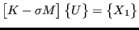
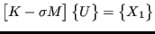

Keyword type: step
This procedure is used to calculate the response of a structure subject to dynamic loading. Although the deformation up to the onset of the dynamic calculation can be nonlinear, this procedure is basically linear and assumes that the response can be written as a linear combination of the lowest modes of the structure. To this end, these modes must have been calculated in a previous *FREQUENCY,STORAGE=YES step (not necessarily in the same calculation). In the *MODAL DYNAMIC step the eigenfrequencies, modes and mass matrix are recovered from the file jobname.eig. The time period of the loading is characterized by its total length and the length of an increment. Within each increment the loading is assumed to be linear, in which case the solution is exact apart from modeling inaccuracies and the fact that not all eigenmodes are used. The number of eigenmodes used is taken from the previous *FREQUENCY step. Since a modal dynamic step is a perturbation step, all previous loading is removed. The loading defined within the step is multiplied by the amplitude history for each load as specified by the AMPLITUDE parameter on the loading card, if any. If no amplitude applies all loading is applied at the start of the step. Loading histories extending beyond the amplitude time scale are extrapolated in a constant way. The absence of the AMPLITUDE parameter on a loading card leads to a constant load.
There are four optional parameters: SOLVER, DIRECT, DELTMX, and STEADY STATE. SOLVER determines the package used to solve for the steady state solution in the presence of nonzero displacement boundary conditions. The following solvers can be selected:
Default is the first solver which has been installed of the following list: SGI, PaStiX, PARDISO, SPOOLES and TAUCS. If none is installed, an error is issued.
The SGI solver should by now be considered as outdated.SPOOLES is very fast, but has no out-of-core capability: the size of systems you can solve is limited by your RAM memory. With 32GB of RAM you can solve up to 1,000,000 equations. TAUCS is also good, but my experience is limited to the  decomposition, which only applies to positive definite systems. It has an out-of-core capability and also offers a
decomposition, which only applies to positive definite systems. It has an out-of-core capability and also offers a  decomposition, however, I was not able to run either of them so far. PARDISO is the Intel proprietary solver and is about a factor of two faster than SPOOLES. The most recent solver we tried is the freeware solver PaStiX from INRIA. It is really fast and can use the GPU. For large problems and a high end Nvidea graphical card (32 GB of RAM) we got an acceleration of a factor between 3 and 8 compared to PARDISO. We modified PaStiX for this, therefore you have to download PaStiX from our website and compile it for your system. This can be slightly tricky, however, it is worth it!
decomposition, however, I was not able to run either of them so far. PARDISO is the Intel proprietary solver and is about a factor of two faster than SPOOLES. The most recent solver we tried is the freeware solver PaStiX from INRIA. It is really fast and can use the GPU. For large problems and a high end Nvidea graphical card (32 GB of RAM) we got an acceleration of a factor between 3 and 8 compared to PARDISO. We modified PaStiX for this, therefore you have to download PaStiX from our website and compile it for your system. This can be slightly tricky, however, it is worth it!
The parameters DIRECT and DELTMX are linked. The parameter DIRECT controls the increment size. If DIRECT=NO the size of increments is variable. It is determined by the requirement that the change in forces within an increment should not exceed the value of DELTMX. Therefore, if the user specifies DIRECT=NO a value for DELTMX has to be provided. Default is DIRECT=YES (or, equivalently DIRECT without any argument). In the latter case the value of DELTMX is irrelevant. The modal forces are the scalar product of the system force vector with each of the selected (mass normalized) eigenmodes. The unit of the modal forces is force times square root of length.
The parameter STEADY STATE can be used to continue a modal dynamics calculation until steady state has been reached. In that case the total time period is set to  and does not have to be specified by the user. Instead, the user defines the maximum allowable relative error for the solution to be considered to be steady state. For instance, if the user sets this number to  steady state will be reached if the change in the largest solution variable (displacements or temperatures, depending on the kind of analysis) does not exceed
and does not have to be specified by the user. Instead, the user defines the maximum allowable relative error for the solution to be considered to be steady state. For instance, if the user sets this number to  steady state will be reached if the change in the largest solution variable (displacements or temperatures, depending on the kind of analysis) does not exceed  .
.
First line:
Example: *MODAL DYNAMIC 1.E-5,1.E-4
defines a modal dynamic procedure with time increment  and time period
and time period  . The time increment is kept constant.
. The time increment is kept constant.
Example: *MODAL DYNAMIC,STEADY STATE 1.E-5,1.E-2
defines a modal dynamic procedure with initial time increment  and relative error
and relative error  . The time increment is kept constant.
. The time increment is kept constant.
Example files: beamdy1, beamdy2, beamdy3, beamdy4, beamdy5, beamdy6, beamdy17.